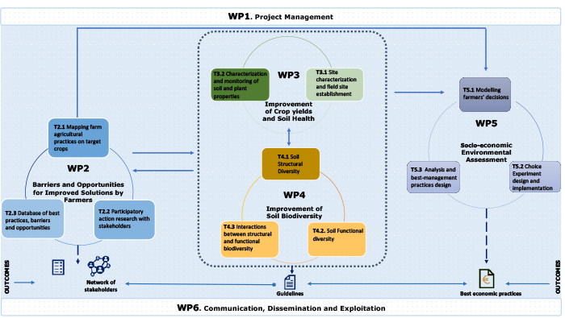
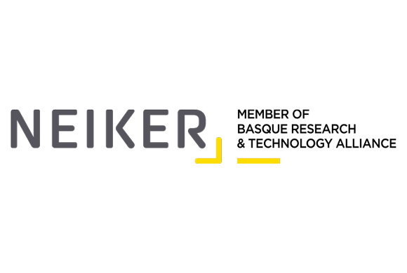
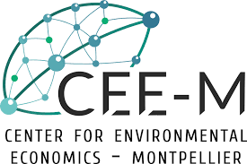
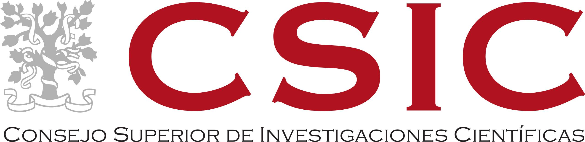
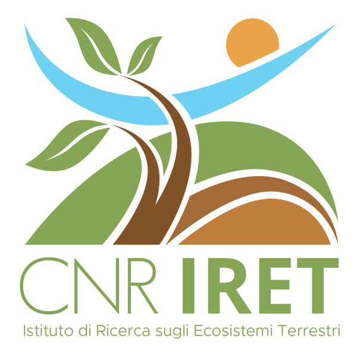
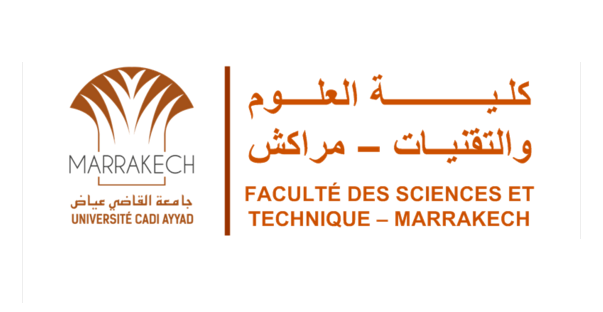
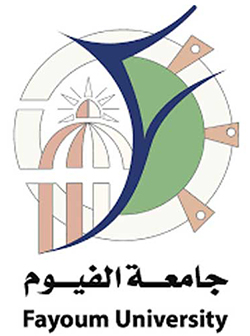
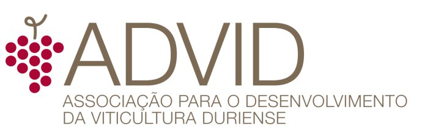
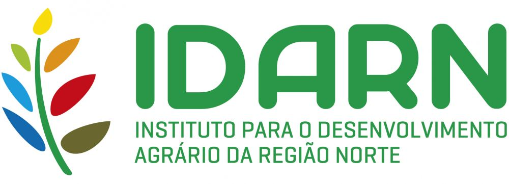
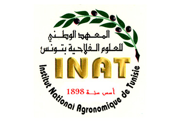

O projecto ReCROP tem como objetivo redesenhar os agroecossistemas mediterrânicos com maior capacidade de resiliência e maior produtividade, focando no desenvolvimento de sistemas de produção agrícola sustentáveis por meio do uso combinado de ferramentas biotecnológicas e práticas agrárias ambientalmente responsáveis. Isso permitirá que os sistemas agrícolas enfrentem as mudanças climáticas por meio da melhoria da biodiversidade do solo e da parte aérea, da fertilidade e da conservação da água. O projecto ReCROP utiliza uma abordagem inovadora de controlo da planta-microrganismo que se baseia no aumento das funções e da saúde do solo por meio do uso de bioinóculos, corretivos, sistemas de cultivo e culturas adaptadas ao clima, com o objetivo de aumentar a produtividade agrícola ao mesmo tempo em que fornece serviços ecológicos, como a remoção de carbono, matéria orgânica, ciclagem de nutrientes e infiltração de água.
O ReCROP cobre a Área Geográfica Mediterrânica (MGA), envolvendo Marrocos (MO), Egito(EGY), Tunísia (TU) (Sul da MGA), Itália (IT) e França (FR) (Norte da MGA), e Portugal (PT) e Espanha (SP) (Oeste da MGA). O projeto abrange as principais culturas cultivadas nesses países (vinhas, cereais, plantas aromáticas/medicinais) e adota uma abordagem multiator, envolvendo associações agrícolas e agricultores locais no desenho dos novos agroecossistemas resilientes.
ReCROP oferece um novo caminho para a agricultura mediterrânica — baseado na ciência, sustentável e enraizado nas necessidades das pessoas e da terra.
O projeto baseia-se tanto em locais de campo já estabelecidos como em novos, e está organizado da seguinte forma:
Figura 1. Metodologia geral do projeto, fluxo de informação e principais resultados do ReCROP.
WP1. Gestão do Projeto
Coordenação geral, gestão e procedimentos para atingir os objetivos da ReCROP e responder aos desafios da convocatória. Articulação eficiente entre os parceiros e com a Comissão Europeia.
WP2. Identificação de barreiras e oportunidades para a melhor adoção das soluções pelos agricultores
ReCROP adotará uma abordagem de Pesquisa-Ação Participativa (PAP) para identificar barreiras e oportunidades técnicas e socioeconómicas à implementação das soluções propostas, bem como ações para a sua aplicação personalizada e equilibrada, garantindo o desenvolvimento territorial e o rendimento dos agricultores.
WP3. Melhoria da produtividade das culturas e da saúde do solo em agroecossistemas mediterrânicos
ReCROP estabelecerá uma rede transnacional de campos de demonstração. Cada parceiro identificará locais que cubram culturas-chave.
WP4. Melhoria da biodiversidade do solo em agroecossistemas mediterrânicos
Avaliação do impacto benéfico das práticas agrícolas aplicadas na ReCROP sobre a diversidade estrutural e funcional em diferentes níveis da cadeia alimentar do solo (macrofauna, mesofauna, microfauna).
WP5. Avaliação socioeconómica e ambiental
WP5 fará uma avaliação económica dos serviços ambientais prestados aos agricultores, para analisar como os mesmos poderiam receber compensações por parte das autoridades públicas em troca da adoção de práticas mais ecológicas, através de Pagamentos por Serviços Ambientais.
WP6. Comunicação, disseminação e valorização (UCP)
Será desenvolvido um Plano de Disseminação direcionado a atores do setor económico (ex. agricultores, prestadores de serviços), decisores políticos do setor, comunidade académica e sociedade em geral, para melhorar a perceção social dos diferentes agroecossistemas e do seu valor para o desenvolvimento sustentável. Os parceiros irão explorar redes e agrupamentos regionais, transnacionais e internacionais.
Fica a par dos mais recentes desenvolvimentos do projeto ReCROP. Todas as notícias e atualizações são partilhadas regularmente nas nossas plataformas oficiais:
Conhece os nossos parceiros institucionais e a equipa ReCROP!
Contacto: Paula Castro
Email: plcastro@ucp.pt
País: Portugal
Parceiro 1
Contacto: Carlos Garbisu
Email: cgarbisu@neiker.eus
País: Espanha
Parceiro 2
Contacto: Jérôme Cortet
Email: jerome.cortet@univ-montp3.fr
País: França
Parceiro 3
Contacto: Sébastien Roussel
Email: sebastien.roussel@univ-montp3.fr
País: França
Parceiro 4
Contacto: Ángeles Prieto Fernández
Email: apf@iiag.cesga.es
País: Espanha
Parceiro 5
Contacto: Luigi P. D'Acqui
Email: luigipaolo.dacqui@cnr.it
País: Itália
Parceiro 6
Contacto: Ali Boularbah
Email: a.boularbah@uca.ac.ma
País: Marrocos
Parceiro 7
Contacto: Mahmoud M. Shendi
Email: mmshendi@fayoum.edu.eg
País: Egito
Parceiro 8
Contacto: Cristina Carlos
Email: cristina.carlos@advid.pt
País: Portugal
Parceiro 9
Contacto: Rosário Alves
Email: info@forestis.pt
País: Portugal
Parceiro 10
Contacto: Taoufik Bettaieb
Email: tbettaieb@yahoo.fr
País: Tunísia
Tens dúvidas? Precisas de informação? Contacta-nos!
Universidade Católica Portuguesa - Escola Superior de Biotecnologia (UCP-ESB)
Rua de Diogo Botelho 1327
4169-005 Porto
E-mail: esb@ucp.pt
Tel: +351 22 558 0001